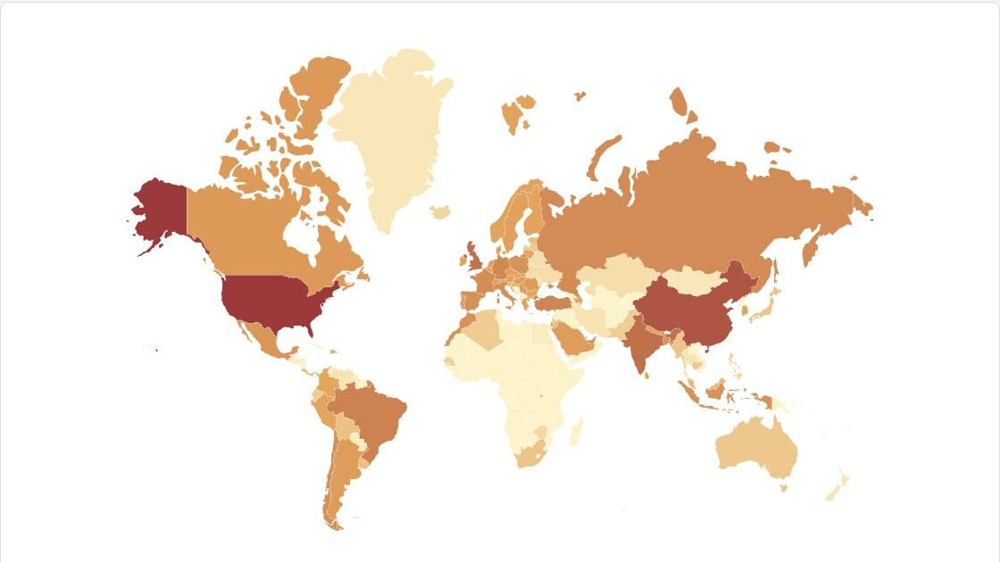
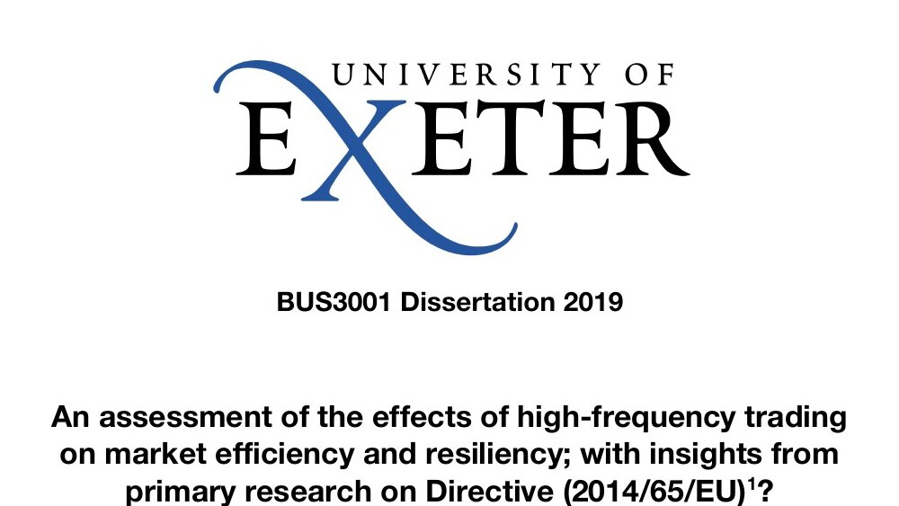
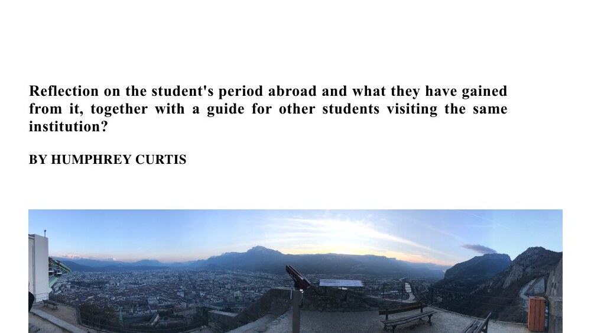

Alongside my academic research I design and build empowering tools and software — including: mobile and wearable applications for people with disabilities, and AI-powered tools for navigating public services.
Portfolio
- 2025–present Current work
-
 Advokit2025–presentView project →
Advokit2025–presentView project → - 2021–2026 Doctoral research
-
 KCL PhD Thesis Template2026View project →
KCL PhD Thesis Template2026View project → -
Zuzenna's Diary2024–2025View project →
-
 Watch Your Language2023View project →
Watch Your Language2023View project → - 2020–2021 King's MSc
-
 Argupedia2021View project →
Argupedia2021View project → -

COVID-19 Vaccination Visualisation2021View project → - 2019–2020 Bristol MSc
-
 Turrellian LED Lamp2020View project →
Turrellian LED Lamp2020View project → - 2015–2019 Exeter BA
-

High-Frequency Trading Dissertation2019View project → -

A Year at Sciences Po Grenoble2017–2018View project →